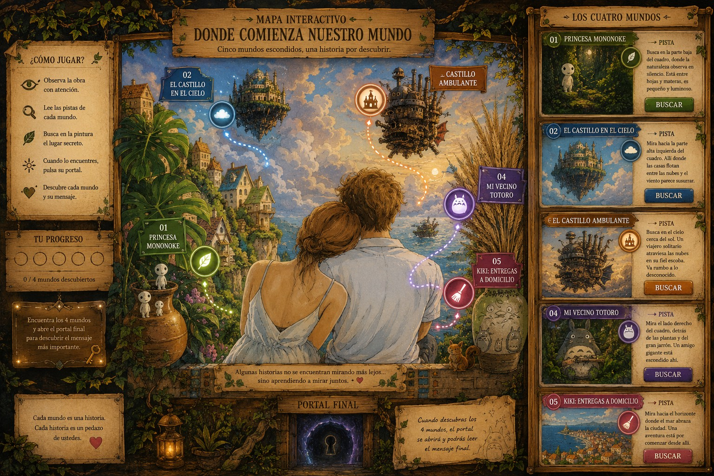

DIANIME · OBRA ORIGINAL
DONDE COMIENZA NUESTRO MUNDO
Una pintura. Cinco secretos. Una historia por descubrir.
✨ 0/5 mundos descubiertos

🌌 EL PORTAL FINAL SE ABRIÓ
No tenían que buscar cinco películas…
tenían que aprender a encontrar cinco maneras de comenzar una historia.
MIRAR JUNTOS.
SOÑAR JUNTOS.
CAMINAR JUNTOS.
CREER JUNTOS.
Y ATREVERSE A VOLAR.